ECON 2316 • Microeconomic Theory • Chapter 9
Profit Maximization
and Firm Supply
Sam runs a burger shop with fifty competitors in a three-mile radius. How many burgers should he grill — and when should he shut the doors?
Dr. Richeng Piao
Department of Economics
Northeastern University
Learning Objectives
By the end of class today, you will be able to…
§9.2
Set up the price-taking firm's profit-maximization problem \(\pi(q) = pq - c(w, r, q)\) and explain what "price taking" means. (Bloom L2)
§9.3
Apply the profit-max first-order condition \(p = MC(q^*)\) and the second-order condition \(MC'(q^*) > 0\) to find the firm's optimal output. (Bloom L3)
§9.4
Distinguish the short-run shutdown rule (\(p < \min AVC\)) from the long-run exit rule (\(p < \min ATC\)) using quasi-rents. (Bloom L5)
§9.5
Derive the firm's supply curve as the inverse of marginal cost above shutdown, and compute the Cobb-Douglas supply elasticity. (Bloom L4)
From the Cost Function to the Output Choice
Ch 8 — What's cheapest?
- Cost-min given output: \(\min wL + rK\) s.t. \(f \geq q\)
- Cost function \(c(w, r, q)\)
- Marginal cost \(MC = \partial c/\partial q\)
- Output \(q\) was taken as given
Ch 9 — How much to make?
- Add an output price \(p\); the firm now chooses \(q\)
- Profit-max: \(\max_q\; pq - c(w, r, q)\)
- FOC \(\Rightarrow p = MC\); supply \(=\) inverse-MC
- When to operate vs shut down
The cost function from Ch 8 is the input to today's problem. Cost minimization solved "cheapest way to make \(q\)" at every \(q\); profit maximization picks the best \(q\). The headline result \(p = MC\) is the envelope-theorem identity from Ch 8 (\(MC = \mu\)), now viewed from the output-choice side.
The Five Industry Characteristics
Five questions decide what kind of market a firm is in. Commit them to memory — we test Sam’s market against them next, and you will meet them again across Chs 10–13.
1. Number of firms. A few giants? Hundreds of small shops? One sole provider?
2. Nature of the product. Homogeneous (perfect substitutes) or differentiated (each its own thing)?
3. Barriers to entry. Enter tomorrow with modest capital — or need patents, billions, licenses, network effects?
4. Control over price. Accept whatever the market sets (price-taker) or post your own (price-maker)?
5. Long-run economic profit. Does free entry compete profit to zero, or do barriers sustain it?
Based on these five differences, every market falls into one of four general structures — a spectrum of market power running from pure price-takers to pure price-makers. Perfect competition first; the other three come in Chs 11 and 13. Examples below ↓
Example: Test the Corn Market
Northwest Iowa corn farm. Photo: Don Graham, CC BY-SA 2.0, via Wikimedia Commons
1. Many firms — about 300,000 US corn farms; one grower planting more never moves the price. ✓ very many
2. Homogeneous product — “No. 2 Yellow Corn” is a federal grade; every farm’s bushel is a perfect substitute. ✓ identical
3. Free entry & exit — no patents or licenses; rent land, buy seed, plant. ✓ low barriers
4. Price-takers — farmers accept the Chicago Board of Trade price (about $4.70/bu, 2026); they choose how much to plant, never the price. ✓ no control
5. Zero long-run profit — good years draw entry and expansion → supply rises → the price falls back to min ATC. ✓ competed away
Result: perfect competition. Corn is the textbook case: a pure price-taker with no market power.
Test Bottled Water — and How Easy Is It to Enter?
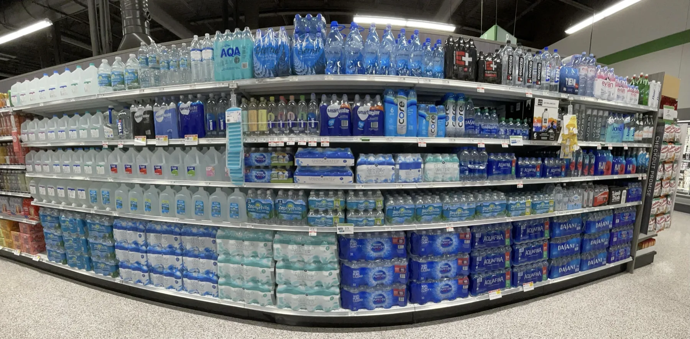
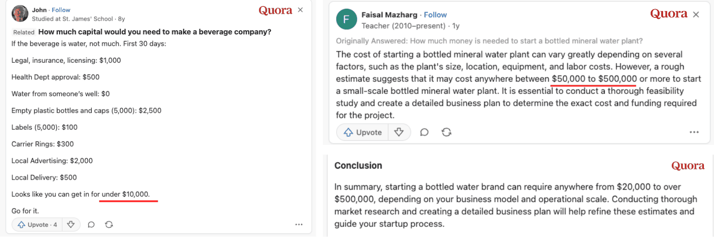
Quora: “How much does it cost to start a bottled-water company?”
Same checklist, store-brand water:
Number of firms — national brands plus every store’s own label. ✓ many
Product — purified water is purified water (or is it? two slides on). ✓ near-identical
Barriers to entry — a small bottling operation can start for under $10,000; a full plan runs about $20K–$500K. No patents, no licenses to fight for. ✓ low
Control over price — store-brand water competes on price. ✓ price-taker
Long-run profit — easy entry competes the margin away. ✓ zero
Result: store-brand bottled water ≈ competitive. Low entry cost is what keeps it that way.
How Easy Is It to Enter? — Bottling Water
Condition 3 in the real world: free entry is what drives the competitive result.
Quora: “How much does it cost to start a bottled-water company?”
A small operation can start for under $10,000; even a full business plan runs ~$20K–$500K by scale.
No patents. No licenses to fight for. No billion-dollar plant — pocket change next to wireless spectrum or a power grid.
Low barrier → free entry → many sellers → economic profit competed to zero
Poll — Name a Homogeneous Product
Type one word: a product where every seller’s unit is a perfect substitute for every other seller’s.
What Makes a Product Not Homogeneous?
Fiji
Store brand
What is inside
water
water
The story
from an artesian aquifer in Fiji
spring water, store label
Bottle & brand
square bottle, famous label
plain bottle, the store’s name
What buyers believe
purer, tastier, a treat
“it’s just water”
If buyers will pay more for one seller’s version, they do not treat the two as perfect substitutes: the product is differentiated. That is monopolistic competition (Ch 13), not perfect competition.
Perfect Competition: Other Examples
A share = any other share · one ounce of gold = another · one public price → millions of price-takers
Test 1 of 5 — How Many Sellers?
Sam asks us, his consultants: “What price should I charge for a basic cheeseburger?” We test his market against the five characteristics, one at a time.
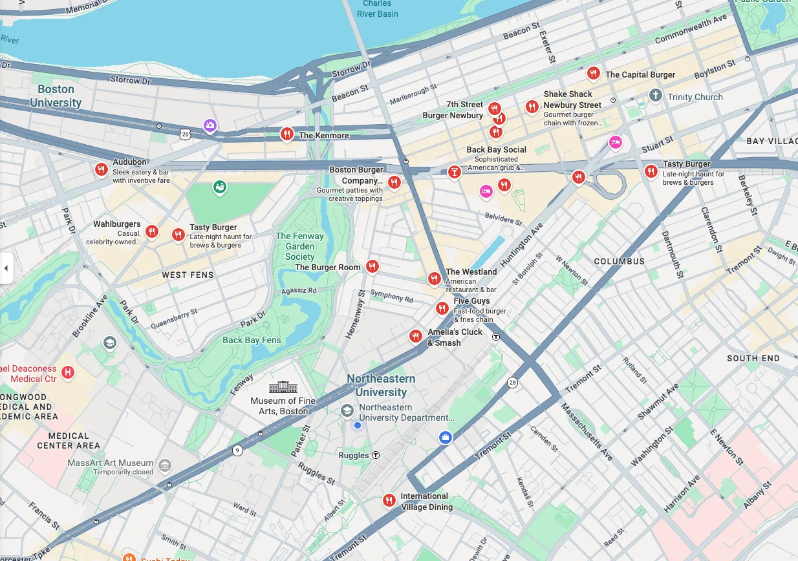
The evidence
Dozens
burger places within a mile of campus
About 50
within three miles
1 pin
Sam’s shop is one seller among many
✓ Many sellers, each one small. No single shop is big enough to move the price.
Conditions 1 & 2 — Many Sellers, One Product
Many sellers: if one wheat farmer plants half an acre more, the global price doesn’t budge. 50 burger joints clears this bar; two airlines on a route does not.
Homogeneous: a bushel of Kansas wheat is a bushel of Kansas wheat. Grade-A Large eggs from Iowa = from Pennsylvania. Buyers don’t care.
Once buyers start caring about brand, recipe, or “vibe,” we’ve moved toward monopolistic competition (Ch 13).
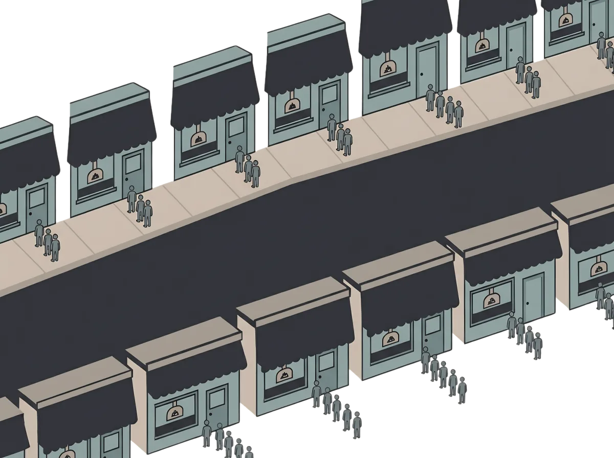
The Basic Cheeseburger — Every Box Checked
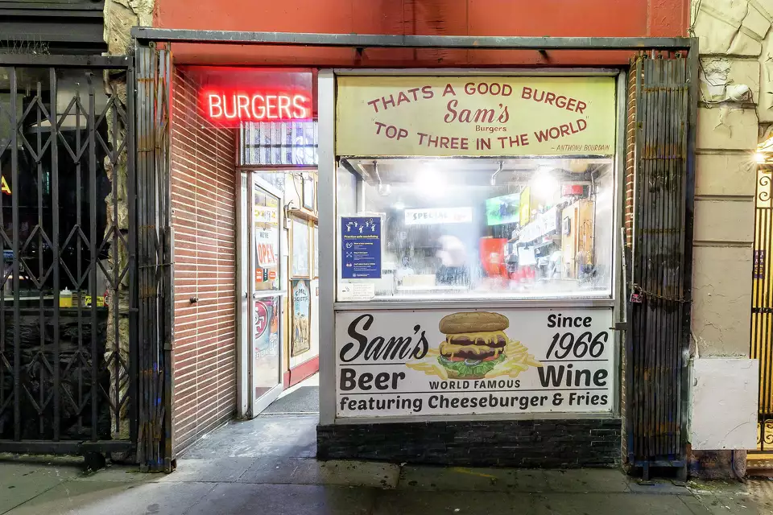
Hold the extras — a basic cheeseburger is a near-commodity.
Run the four conditions on the basic cheeseburger market near campus:
1. Many buyers & sellers — ~50 shops within 3 miles, thousands of late-night buyers. ✓
2. Homogeneous product — one basic cheeseburger ≈ any other. ✓
3. Free entry & exit — rent a storefront, buy a griddle, open. ✓
4. Price-takers — everyone’s at ~$10; charge more, lose the block; charge less, give up revenue. ✓
All four boxes checked → perfect competition.
Caveat: this only holds for the basic cheeseburger. Signature builds, premium toppings, and brand/vibe differentiate — that’s monopolistic competition (Ch 13).
Many Sellers — Just Look at the Map
The same map from the top of the hour — condition 1 in one glance. No single burger shop has the market power to move the price.
Fifty Shops Within Three Miles
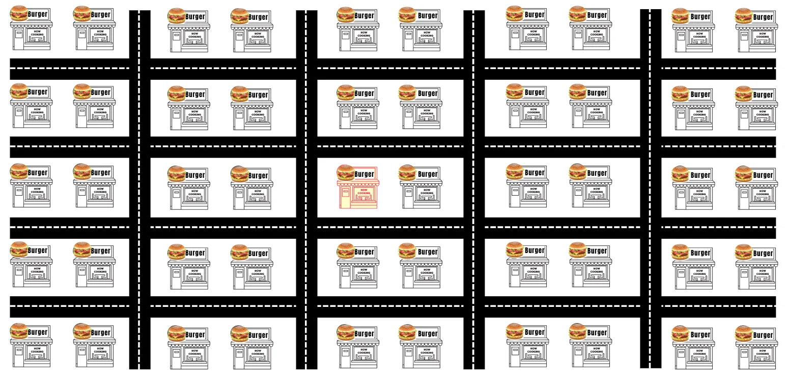
About 50 shops compete inside a 3-mile radius of campus — and we’re studying just one product across all of them: the basic cheeseburger.
Test 2 of 5 — Is the Product the Same?
The product we test
A basic cheeseburger: bun, patty, cheese. Hold the extras.
Ask a buyer
Would you walk an extra block for one shop’s basic cheeseburger over another’s? Most buyers would not.
So
One is a perfect substitute for the next.
✓ Homogeneous, for the basic cheeseburger. Signature builds and brand are differentiated: that is Ch 13.
Test 3 of 5 — Could You Open One Next Semester?
A storefront
Lease one; plenty come up every year.
A griddle
In Sam’s costs, $50 a day.
Some cooks
Hire them at the going wage.
No patent, no secret recipe, no cap on the number of burger shops; just the usual city permits.
✓ Low barriers: free entry and exit. A shop that spots profit can open; one losing money can close.
Conditions 3 & 4 — Free Entry, Price-Takers
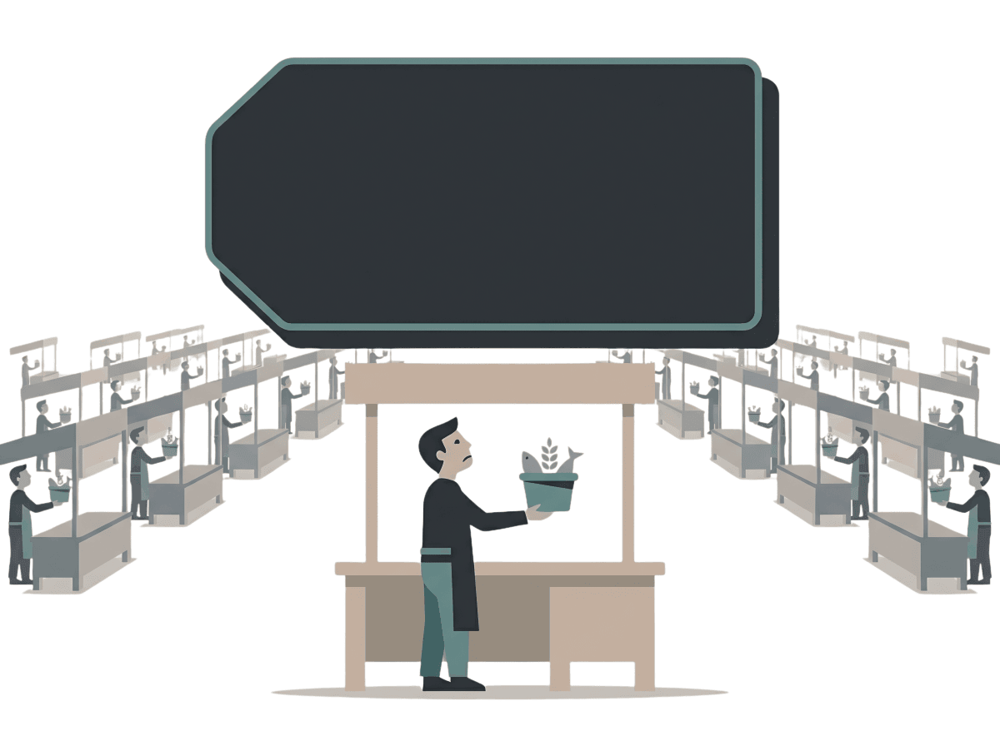
Free entry & exit: a firm that spots profit can enter; a firm losing money can leave. This is what drives the long-run zero-profit result later in the chapter.
Price taker: a firm that must accept the market price as given. It chooses its quantity; it cannot influence the price.
Taking the price is the rational choice. Charge above market → lose every customer. Charge below → give up revenue for nothing.
The Going Price — Everyone Lands in the Same Band
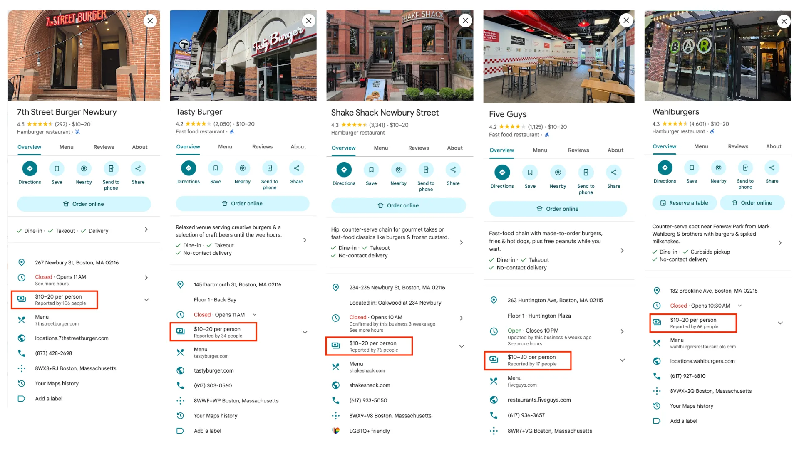
7th Street, Tasty Burger, Shake Shack, Five Guys, Wahlburgers — every one reports $10–20 per person. Nobody’s an outlier. That’s the band the market hands Sam.
Narrow it from a whole meal to the basic burger and the going price is about $10 — the number the next three slides deviate from. ↓
Poll — You Own Sam’s Shop. What Price Do You Post?
Every shop on the block sells a basic burger for $10. Pick his price.
The room’s vote
What Happens at $11, $9 and $10?
$11: customers walk
A dollar more, and every customer walks one door down to a $10 shop. Sam sells nothing and still pays the $50 griddle.
Profit: −$50
$9: a crowd he cannot serve

Customers rush back, but his griddle is already full at his best quantity, and he could already sell all he wants at $10. A lower price wins no burgers he could make; it only cuts what each one earns.
At $9 his best is 40 burgers: 360 − 280.
Profit: $80
$10: take the price
He sells all he chooses to make at the going price: 40 or 50 burgers.
Profit: $120
Profit for one day: −$50 at $11 · $80 at $9 · $120 at $10. Our advice to Sam: charge the market price. The only thing you choose is how many.
Charge Too High ($11) → Lose Everyone
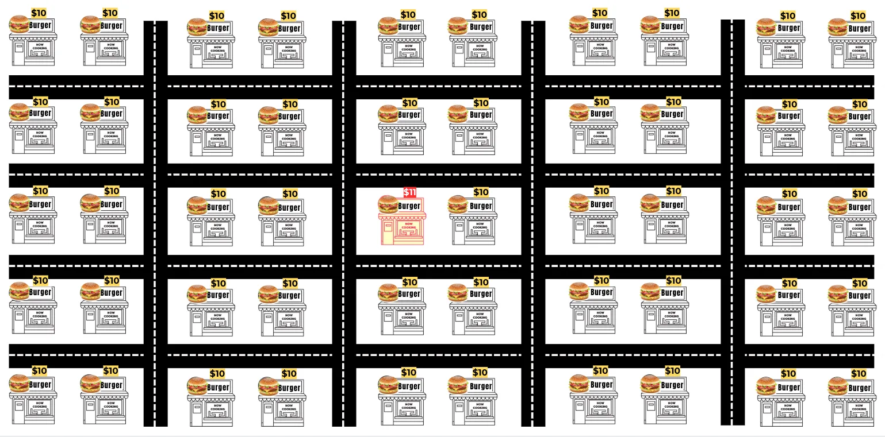
Price your burger at $11 while the block sits at $10, and customers just walk to the next shop. You sell almost nothing.
Charge Too Low ($9) → Give Up Revenue
Drop to $9 and you’ll sell — but you give up margin you did not need to lose. The market would have paid $10.
Match the Market ($10) → You Sell
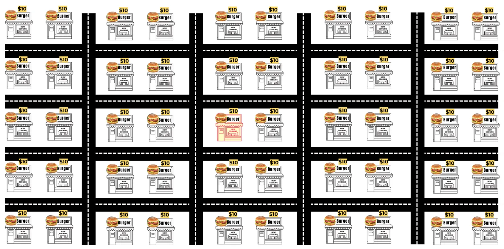
Price at $10, like everyone else, and you sell all you can make at the going rate. The only rational choice.
Therefore: a Price-Taker
Above the market ($11) → lose every customer to the 49 rivals.
Below the market ($9) → sell, but give up margin for no reason.
At the market ($10) → sell all you can make. The only sensible choice.
Sam can’t set the price — he can only take it. That’s a price-taker (condition 4), and it’s why his firm demand curve is flat.
Test 4 of 5 — Who Sets the Price?
The evidence
Every shop near campus sits in the same price band. For a basic burger, the going price is about $10.
Price taker
A firm that must accept the market price. It chooses its quantity; it cannot choose its price.
✓ Price-taker. The poll showed it: a higher price loses every customer, a lower one gives up revenue. Sam takes the going price.
Test 5 of 5 — Can Profit Last?
A good year (economic profit > 0)
New shops open → supply shifts right → the price falls.
A bad year (economic profit < 0)
Shops close → supply shifts left → the price rises.
Either way the price moves until economic profit is zero in the long run: shops earn exactly what their owners could earn elsewhere. Ch 10 builds this.
✓ Five for five. Sam’s basic-cheeseburger market is perfectly competitive. Our advice: charge the market price. The only thing you choose is how many.
The Firm’s Demand Curve Is Flat
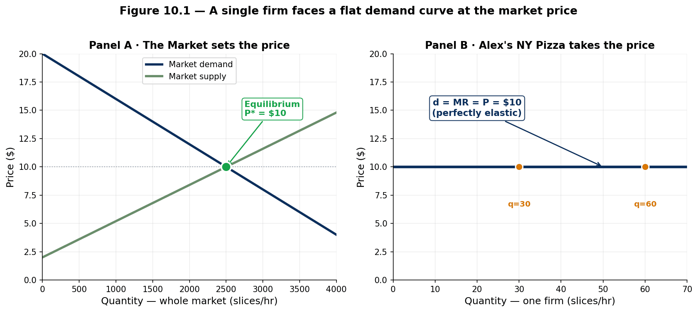
Market demand slopes down. But the demand facing one firm is a horizontal line at the market price. How can both be true?
Because the firm is a tiny share. If Sam raises his price, he loses his customers to 49 rivals. If he lowers it, he can sell everything he makes without moving the market.
Marginal revenue (MR) = revenue from one more unit. For a price-taker, every unit sells at the same price, so…
P = MR
The single most important equation in the chapter. Everything builds on it.
The Industry Sets the Price; the Firm’s Demand Is Flat
Panel A — Industry (market level)
The market: every burger shop near campus
Panel B — Firm (firm level)
One firm: Sam’s shop, a price-taker
The market’s demand slopes down, but the demand facing one firm is flat at the market price. Raise the price and Sam loses his customers to 49 rivals; at the market price he sells everything he makes.
Every burger sells at the same price, so marginal revenue is that price:
P = MR
Sam Takes the Price. What Does He Still Decide?
The market sets $10. Three choices are left, and the rest of the chapter answers them in order.
🍔
1. How many burgers?
At $10 a burger, does Sam make 30 a day? 50? 60? Each extra batch costs more than the last.
Answered in §9.3: make burgers while the next one costs no more than $10, so \(p = MC\).
👥
2. How many workers?
Rush hour, 3 pm to 8 pm: one griddle, and every hire adds 10 burgers but more labor than the one before.
Answered in the rush-hour slide next: the worker who brings MC up to $10 is the last one hired.
🔒
3. Open or closed?
A slow week: the price of a basic burger drops. Does Sam keep the grill on, or close until it recovers?
Answered in §9.4: compare the price with min AVC (close for now) and min ATC (leave for good).
Put the three answers together and you get Sam’s supply curve (§9.5): the rising part of his MC above min AVC. §9.7 then asks what a wage rise or a price drop does to it.
Section 3 · §9.3
The Competitive Firm’s Decision
Sam can’t choose his price — only his quantity
Profit = Revenue − Cost
Total Revenue
TR = P × Q
P = $10, taken from the market
Total Cost
TC = FC + VC
Sam’s cost curves from Ch 8
Economic Profit
π = TR − TC
what Sam keeps
Sam’s mission is to maximize profit. Price is fixed (he’s a price-taker), so his only choice is how much to produce — that’s next. ↓
Rush Hour at Sam’s — Add Workers from 3 pm to 8 pm
One griddle (capital, fixed): $50 a day. Price $10. Each hire lets the line turn out 10 more burgers. Watch the variable cost: labor and ingredients.
1 worker · 10 burgers
This hire adds $40 of variable cost (labor and ingredients) for 10 more burgers
VC $40 + capital $50 = TC $90
TR = $10 × 10 = $100
Profit $10
2 workers · 20 burgers
This hire adds $50 of variable cost (labor and ingredients) for 10 more burgers
VC $90 + capital $50 = TC $140
TR = $10 × 20 = $200
Profit $60
3 workers · 30 burgers
This hire adds $60 of variable cost (labor and ingredients) for 10 more burgers
VC $150 + capital $50 = TC $200
TR = $10 × 30 = $300
Profit $100
4 workers · 40 burgers
This hire adds $80 of variable cost (labor and ingredients) for 10 more burgers
VC $230 + capital $50 = TC $280
TR = $10 × 40 = $400
Profit $120
5 workers · 50 burgers
This hire adds $100 of variable cost (labor and ingredients) for 10 more burgers
VC $330 + capital $50 = TC $380
TR = $10 × 50 = $500
Profit $120
6 workers · 60 burgers
This hire adds $120 of variable cost (labor and ingredients) for 10 more burgers
VC $450 + capital $50 = TC $500
TR = $10 × 60 = $600
Profit $100
Profit falls: the sixth hire costs $120 for $100 of burgers.
Sam’s day, written down hire by hire · P = MR = $10
| Workers | Q | VC (labor + materials) | TC | MC | MR | Profit |
|---|---|---|---|---|---|---|
| 1 | 10 | $40 | $90 | $4 | $10 | $10 |
| 2 | 20 | $90 | $140 | $5 | $10 | $60 |
| 3 | 30 | $150 | $200 | $6 | $10 | $100 |
| 4 | 40 | $230 | $280 | $8 | $10 | $120 |
| 5 | 50 | $330 | $380 | $10 | $10 | $120 |
| 6 | 60 | $450 | $500 | $12 | $10 | $100 |
With the griddle fixed, each extra 10 burgers adds more variable cost as the kitchen crowds: $40, 50, 60, 80, 100, 120. That is marginal cost rising. Profit peaks at 4–5 workers ($120).
Stop When Marginal Cost = Marginal Revenue
Going from the 4th to the 5th cook — what does that one extra batch add?
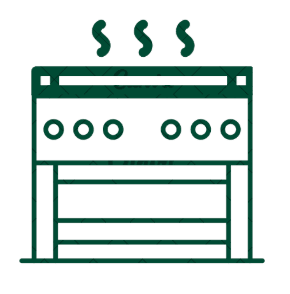
×1+Labor $230 ×4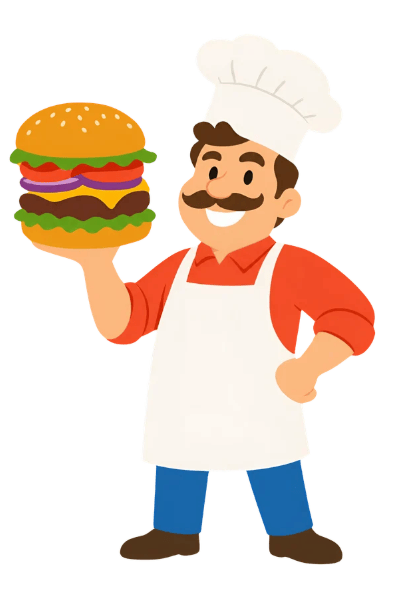
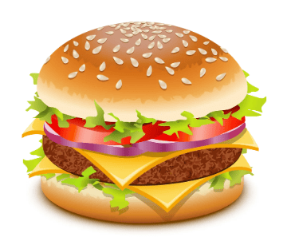
× 40Additional Cost
1 × $100 = $100
Additional Revenue
10 × $10 = $100
When MC = MR, the extra batch exactly breaks even — that’s the profit-maximizing quantity.
Sam’s Burger Shop at a $10 Price
FC = $50/day (rent, griddle, POS). Labor is variable. Each worker makes 10 burgers/hr.
| Q | FC | VC | TC | MC | P | TR | MR | Profit |
|---|---|---|---|---|---|---|---|---|
| 10 | $50 | $40 | $90 | $4 | $10 | $100 | $10 | $10 |
| 20 | $50 | $90 | $140 | $5 | $10 | $200 | $10 | $60 |
| 30 | $50 | $150 | $200 | $6 | $10 | $300 | $10 | $100 |
| 40 | $50 | $230 | $280 | $8 | $10 | $400 | $10 | $120 |
| 50 | $50 | $330 | $380 | $10 | $10 | $500 | $10 | $120 |
| 60 | $50 | $450 | $500 | $12 | $10 | $600 | $10 | $100 |
Profit peaks at $120. The 41st–50th burgers each contribute $0 at the margin — so Sam makes all 50 (the higher tied quantity). Make 60 and the last burgers lose money.
The MR = MC Rule
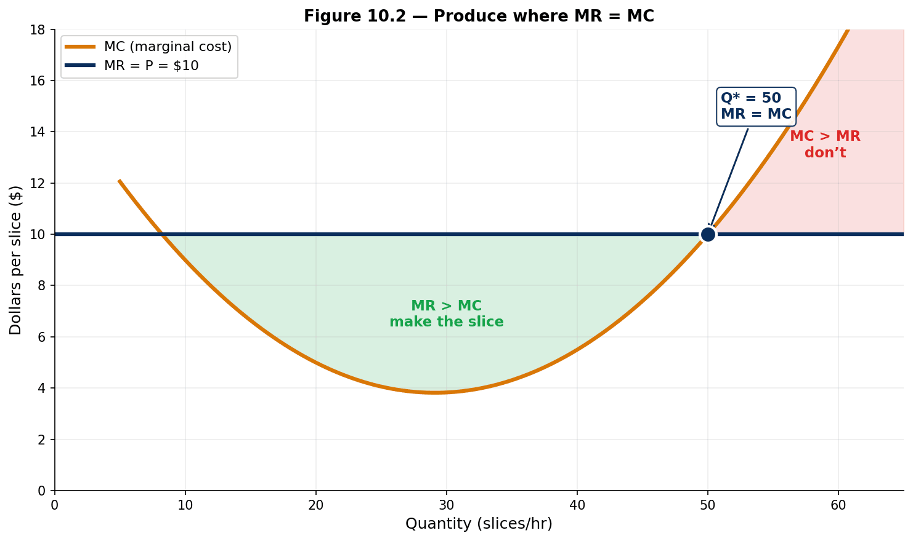
- 40 → 50: adds $100 revenue, $100 cost — breaks even
- 50 → 60: adds $100 revenue, $120 cost — loses $20
- 30 → 40: adds $100 revenue, $80 cost — earns $20
Keep producing while MR > MC; stop when they’re equal. For a price-taker, since P = MR, this is just P = MC.
MC and MR — Where Sam Stops
MR = MC. Make more while MR > MC (green); cut back where MC > MR (red). At $10 the curves cross near 45 burgers: profit $120. A lower price moves MR down and the crossing left, and profit falls ($9: $80; $8: $40). For a price-taker MR = P, so the rule is P = MC.
Poll #2 — Maria’s Cookie Orders: What Is Her MC?
Maria sells cookies she markets on social media: students order through her posts, and she bakes in a rented kitchen near campus. She takes the going price per dozen. Her weekly cost is \(TC = 50 + 4Q + 0.05Q^2\) dollars, with \(Q\) in dozens: a fixed cost of \(\$50\) for her weekly slot in the rental kitchen, \(\$4\) a dozen in ingredients, and \(0.05Q^2\) for the extra kitchen hours and delivery runs as orders pile up.
What is her marginal cost \(MC\)?
60 sec to vote
Answer: B — \(MC = 4 + 0.10Q\)
Marginal cost is the derivative of total cost — differentiate \(TC\) term by term:
\(MC = \dfrac{dTC}{dQ} = \dfrac{d}{dQ}\big(50 + 4Q + 0.05Q^2\big) = 0 + 4 + 0.10Q = \mathbf{4 + 0.10Q}\)
The fixed cost \(\$50\) is constant, so its derivative is \(0\) — it never appears in \(MC\).
Why the others miss: A) power-rule slip — \(0.05Q^2 \to 0.10Q\), not \(0.05Q\) (bring the exponent 2 down). C) kept the fixed cost (\(50 + 4 = 54\)), but a constant's derivative is \(0\) — FC never enters \(MC\). D) didn't differentiate — that's the variable cost, not marginal cost.
§9.2
The Profit-Maximization Problem
\(\max_q\; \pi(q) = pq - c(w, r, q)\)
The Firm Chooses Output to Maximize Economic Profit
\[ \pi(q) = \underbrace{p \cdot q}_{\text{revenue}} - \underbrace{c(w, r, q)}_{\text{cost (Ch 8)}} \]
It picks output, not price
A price-taking firm is small relative to its market: its own production doesn't move \(p\). It takes \(p\), \(w\), and \(r\) all as given.
It reuses Ch 8's cost function
\(c(w,r,q)\) already solved the cheapest input mix at every \(q\). Profit-max just picks the best \(q\) given that.
Two equivalent statements — single-variable vs the joint problem over inputs:
\(\displaystyle \max_q\; pq - c(w,r,q)\)
\(\displaystyle \max_{q,K,L}\; pq - wL - rK \;\text{ s.t. }\; q \leq f(K,L)\)
Solve for \(q^*\), Recover Everything Else
The choice variable is \(q\). Once we find the optimum \(q^*\), every other object follows:
\(L^*\)
labor
\(K^*\)
capital
\(c^*\)
total cost
\(R^* = pq^*\)
revenue
\(\pi^* = R^* - c^*\)
profit
Recall from Principles — 1116 §10.2
A perfectly competitive firm faces a horizontal demand curve at the market price: it can sell any quantity at \(p\), but charge a penny more and it loses every customer to identical rivals. That flat demand curve is the geometric content of price taking. Today we make it formal: \(p = MC\), the supply curve, and the shutdown threshold.
A caution on language: we don't claim Sam writes down a Lagrangian. Competitive pressure — entry, exit, owners demanding returns — produces an outcome that looks like he computed the maximum. The theory describes the equilibrium of a process, not the cognition of a manager.
§9.3
The First-Order Condition: \(p = MC\)
Produce up to where the next unit's revenue equals its cost
Set the Derivative of Profit to Zero
Maximize \(\pi(q) = pq - c(w,r,q)\). Differentiate in \(q\):
\[ \frac{d\pi}{dq} = p - \frac{dc}{dq} = p - MC(q) \]
Set it to zero at the best output \(q^*\): \(p - MC(q^*) = 0\)
\(p = MC(q^*)\)
The intuition is "bake one more?"
- If \(p > MC\): the next unit earns \(p\), costs less than \(p\). Expand.
- If \(p < MC\): the next unit costs more than it earns. Cut back.
- Only at \(p = MC(q^*)\) is there no marginal incentive to move. Optimum.
For a price taker, \(p\) is the marginal revenue of one more unit (every unit sells at \(p\)). So \(p = MC\) equates marginal revenue and marginal cost — the producer-side counterpart of the consumer's equimarginal rule \(MU_i/p_i = \lambda\) from Ch 5.
Second-Order Condition: \(MC\) Must Slope Up
Check it's a maximum, not a minimum:
\[ \frac{d^2\pi}{dq^2} = -MC'(q^*) < 0 \;\Longleftrightarrow\; MC'(q^*) > 0 \]
The firm operates on the upward-sloping part of the \(MC\) curve. Short-run cost functions with diminishing returns to the variable input give rising \(MC\) everywhere, so the SOC holds automatically.
Heads Up — a common mistake
The SOC is "\(MC\) slopes up at \(q^*\)" — the slope \(MC'(q^*) > 0\). It is not "\(MC > 0\)," the level. Almost every cost function has \(MC > 0\) everywhere; the rising-\(MC\) condition is what rules out the falling-\(MC\) side where profit is minimized.
Calculus Corner 9.1. \(\pi(q)=pq-c(w,r,q)\Rightarrow \pi'(q)=p-MC(q)\). FOC: \(p=MC(q^*)\). \(\pi''(q)=-MC'(q^*)\), so the SOC for a max is \(MC'(q^*)>0\). \(p\) is marginal revenue (price-taking); \(MC\) is marginal cost; the FOC equates the two.
\(p = MC\) at the Burger Counter (\(p = \$10\))
Fixed cost \(\$50\)/day; the production schedule gives \(10, 20, \ldots, 60\) burgers at \(L = 1, \ldots, 6\) workers.
| Workers \(L\) | Burgers \(q\) | Variable cost | Total cost | \(MC = \Delta TC/\Delta q\) | Revenue \(pq\) | Profit |
|---|---|---|---|---|---|---|
| 1 | 10 | \$40 | \$90 | \$4 | \$100 | \$10 |
| 2 | 20 | \$90 | \$140 | \$5 | \$200 | \$60 |
| 3 | 30 | \$150 | \$200 | \$6 | \$300 | \$100 |
| 4 | 40 | \$230 | \$280 | \$8 | \$400 | \$120 |
| 5 | 50 | \$330 | \$380 | \$10 \(= p\) | \$500 | \$120 |
| 6 | 60 | \$450 | \$500 | \$12 \(> p\) | \$600 | \$100 |
\(MC\) rises monotonically (each extra batch costs more labor as the kitchen crowds → \(MC\) rises → SOC holds). At \(p = \$10\), marginal cost crosses price at \(L = 5\); a sixth worker pushes \(MC\) to \(\$12 > p\). Profit-max: 50 burgers, 5 workers, \$120/day.
Walkthrough 9.1 — Profit-Max by Calculus: Differentiate in \(q\)
Problem. Sam's cost curve in smooth form: \(c(q) = 50 + 2q + 0.08q^2\) (\(FC = \$50\)). (1) Differentiate and solve the FOC \(p = MC\) for \(q^*(p)\). (2) Read the shutdown (min AVC) and exit (min ATC) floors off the cost curve. (3) Classify \(p = \$10,\ \$5,\ \$1.50\).
Method (§9.3): \(\displaystyle\max_q\;\pi(q) = pq - c(q)\;\Rightarrow\;\frac{d\pi}{dq} = p - MC(q) = 0\;\Rightarrow\;p = MC.\)
(1) Differentiate → FOC → \(q^*(p)\)
\(MC(q) = c'(q) = 2 + 0.16q\)
\(p = 2 + 0.16q \;\Rightarrow\;\) \(q^*(p) = \dfrac{p-2}{0.16} = 6.25(p-2)\)
(2) Read the floors off \(c(q)\)
\(AVC = 2 + 0.08q\) → Shutdown point: \(p = \min AVC = \$2\)
\(ATC = \frac{50}{q} + 2 + 0.08q\) → Exit (break-even) point: \(p = \min ATC = \$6\) at \(q = 25\)
| Price \(p\) | \(q^* = 6.25(p-2)\) | vs the two points | Now (short run) | Long run |
|---|---|---|---|---|
| \$10 | 50 | \(p > \$6\) | Positive profit: \(\pi = 500 - 350 = +\$150\) | Stay (\(p > \min ATC\)) |
| \$5 | 18.75 | \(\$2 < p < \$6\) | Loss, but the loss-minimizing choice: \(\pi \approx -\$22\) beats \(-\$50\) (revenue covers VC) | Exit (\(p < \min ATC\)) |
| \$1.50 | 0 | \(p < \$2\) | Shut down: loss \(= -FC = -\$50\) | Exit (\(p < \min ATC\)) |
Takeaway. One cost curve → one supply formula \(q^*(p) = 6.25(p-2)\) plus two floors (min AVC, min ATC) that classify every price. The burger table's \(p = MC\) row was this same first-order condition — now solved in closed form, good for any \(p\).
The Same Rule at the Gigafactory
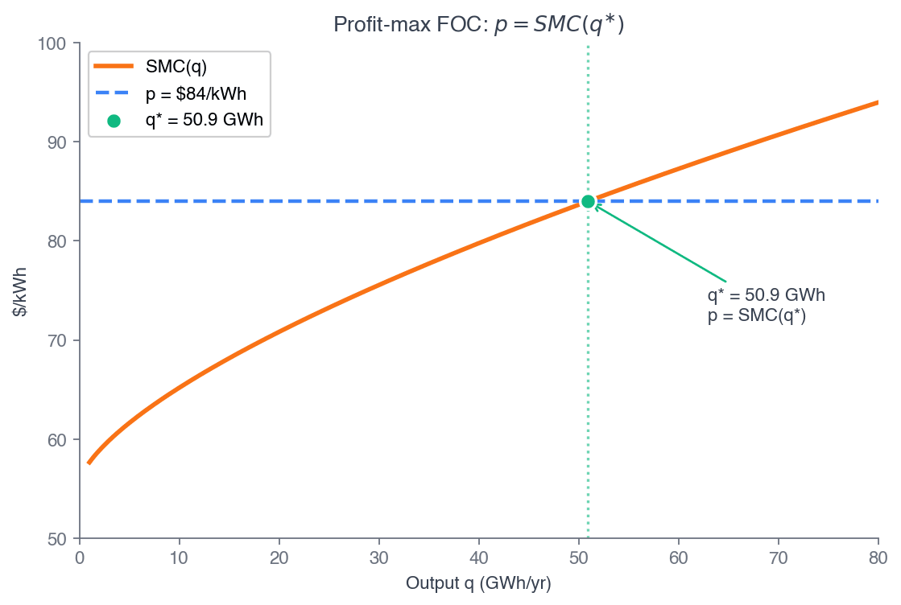
Gigafactory numbers (Chs 7–8)
\(A=8,\ \alpha=0.4,\ \beta=0.6,\ \bar K=4\)
\(w=0.10,\ r=0.13\)
New: \(p=\$84\)/kWh output price, \(m=\$55.6\)/kWh materials cost
The rising \(SMC(q)\) crosses \(p = \$84\)/kWh at \(q^* = 50.9\) GWh/yr. Same picture as the burger table — only the axes are in batteries, not burgers.
Read it left to right: below \(q^*\), \(p > MC\) (expand); above \(q^*\), \(p < MC\) (contract).
Where \(SMC\) comes from — four steps from the Ch 7–8 numbers
1 · SR production, \(\bar K = 4\) fixed
\(q = A\bar K^{\alpha}L^{\beta} = 13.929\,L^{0.6}\)
2 · invert for labor
\(L(q) = (q/13.929)^{5/3}\)
3 · variable cost = wages + materials
\(VC(q) = wL(q) + mq\)
4 · differentiate
\(SMC = \dfrac{dVC}{dq} = 0.011967\,(q/13.929)^{2/3} + m\)
Materials enter as the constant \(m\); labor supplies the rising term. That is why \(SMC\) slopes up and never falls below \(m\) — which is exactly why \(\min AVC = m\) is the shutdown floor (§9.4).
Application — Tesla Semi, Nevada
Our theoretical optimum \(q^* = 50.9\) GWh is about 60% above the Ch 7 baseline plant of 32 GWh. In January 2023 Tesla announced a Nevada expansion that includes its first high-volume Semi factory.
Tesla’s Nevada expansion plans 50,000 Semis a year: \(\times\) ~1 MWh \(\approx\) 50 GWh a year — the same scale as our whole plant’s \(q^* = 50.9\) GWh. Same order of magnitude; not a test of the model.
Caveat: a forward-looking expansion isn't a pure static profit-max response — it bakes in expected future demand and the choice of installed capital \(\bar K\) for the next short run.
50.9
Theoretical \(q^*\) (GWh/yr) at \(p=\$84\)
50K
Semi trucks/yr, Nevada design capacity
~50
GWh a year (\(\times\)1 MWh/truck)
\$3.6B
Nevada expansion, announced Jan 2023
Measuring the Firm's Profit
Profit is total revenue minus total cost — rewrite it with price and average total cost:
\[ \pi = TR - TC = (P\times Q) - (ATC\times Q) = (P - ATC)\times Q \]
Graphically, profit is the area of a rectangle at the profit-max output \(Q^*\):
- Width \(= Q^*\) (the quantity)
- Height \(= P - ATC\) (profit per unit)
\(P > ATC\): the rectangle is profit. \(P < ATC\): it's a loss.
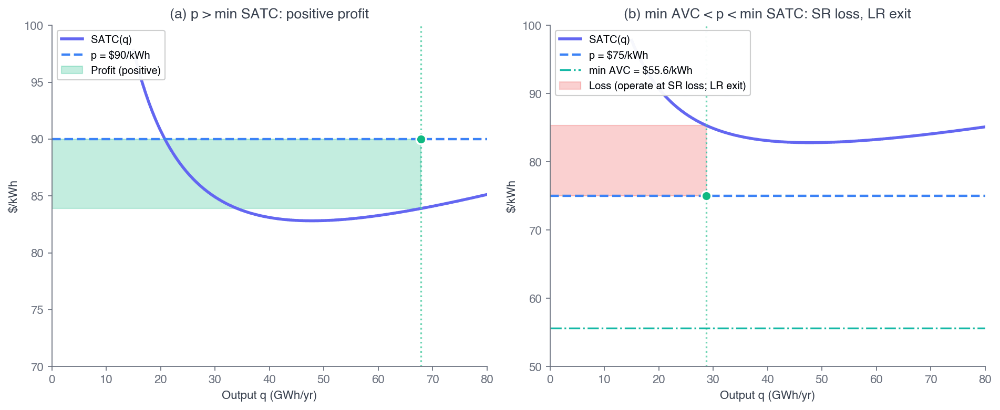
Five Steps to Profit-Max on a Graph
§9.4
Shutdown and Exit
The asymmetry of sunk vs avoidable fixed costs
Short-Run Shutdown vs Long-Run Exit
Short run — \(\bar K\) sunk
Fixed cost \(r\bar K\) is paid whether or not you produce, so it cancels. Compare revenue to variable cost:
\(pq^* - VC \geq -r\bar K\)
Operate iff \(p \geq \min AVC\)
Long run — \(K\) adjustable
Nothing is sunk: sell equipment, walk away from leases, leave the industry. Every cost is avoidable, so compare to total cost:
\(pq^* \geq c_l(q^*)\)
Operate iff \(p \geq \min ATC\)
The asymmetry. SR uses min AVC (the fixed cost is sunk, so operating at a loss can beat not operating); LR uses min ATC (exit avoids every cost). The wedge between the two thresholds is exactly the avoidable fixed cost.
Shutdown, Loss-Min, and the Three Price Zones
Drag the price through all three zones. Break-even is min ATC $9; the shutdown floor is min AVC $4.20.
Zone 1 — P > min ATC: economic profit. Produce, pocket it.
Zone 2 — min AVC < P < min ATC: losing money, but stay open — you still cover some fixed cost.
Zone 3 — P < min AVC: every burger loses money before rent. Shut down.
Generic U-shaped costs here. We run the same three zones on the gigafactory’s own numbers a few slides from now — where AVC turns out not to be U-shaped.
Negative Profit — Operate at a Loss, or Shut Down?
In the short run the firm owes its fixed cost whether or not it produces. Lay the two options side by side — \(FC\) appears in both columns:
| Shut down (\(Q = 0\)) | Operate (\(Q = Q^*\)) | |
|---|---|---|
| Revenue | None | \(TR\) |
| Cost | \(FC\) | \(FC + VC\) |
| Profit / loss | \(\pi_{\text{shut}} = -FC\) | \(\pi_{\text{op}} = TR - FC - VC\) |
Operating wins when \(\;\pi_{\text{op}} > \pi_{\text{shut}}\;\): \(\quad TR - FC - VC \;>\; -FC \quad\Longrightarrow\quad \pi_{\text{op}} - \pi_{\text{shut}} = TR - VC \;>\; 0\)
Operate at a loss whenever \(TR > VC\). The \(FC\) cancels — it is paid either way. Fixed cost is sunk in the short run, so what matters is whether revenue beats variable cost, not total cost.
The Short-Run Shutdown Rule
Continue operating if
\(TR \geq VC \quad\text{or}\quad P \geq AVC\)
Shut down if
\(TR < VC \quad\text{or}\quad P < AVC\)
Divide \(TR \geq VC\) by the loss-minimizing quantity \(Q^*\): the cutoff is \(\;P \geq AVC(Q^*)\), i.e. price at or above minimum AVC.
Keep operating as long as you cover your variable cost.
Poll #3 — Open the Truck, or Shut Down Today?
Priya runs a taco truck. She paid \(\$600\) for a game-day vendor permit — non-refundable (a sunk fixed cost). Each order costs \(\$3\) in ingredients + packaging and sells for \(\$8\). The home team is out of playoff contention, so the crowd is thin — she expects only 100 orders today.
Should Priya open the truck today?
60 sec to vote
Answer: B — Open the truck (and lose less)
Shutdown rule: operate iff \(p \geq AVC\). Here \(p = \$8 > AVC = \$3\) → open. Compare the two losses:
Open: \(TR = \$8\times 100 = \$800\); \(VC = \$300\); \(FC = \$600\) ⇒ profit \(= \mathbf{-\$100}\)
Shut down: loss \(= -FC = \mathbf{-\$600}\)
Why the others miss: A) a loss isn't a reason to close — operating loses less. C) \(p < ATC = \$9\) is true, but that's the long-run exit rule; the short-run shutdown rule compares \(p\) to \(AVC = \$3\). D) not equal — \(-\$100 \neq -\$600\). The \$500 of revenue above variable cost is what makes opening worth it.
Quasi-Rents: the Contribution to Recovering Sunk Cost
Quasi-rents \(= pq - VC\). Positive quasi-rents mean operating beats shutting down — even when profit is negative.
Heads Up — quasi-rents \(\neq\) profit
Quasi-rents \(= R - VC\). Profit \(= R - VC - FC\). They differ by the fixed cost. A firm can have positive quasi-rents and negative profit — operating, losing money, and rationally choosing to. Shutdown uses quasi-rents; exit uses profit.
Recall from Principles — 1116 §10.3
Sam's three zones as price fell \(\$8 \to \$7 \to \$6.50\): positive profit, operate-at-a-loss, shut down. We now write them as \(p \geq \min AVC\) (SR) and \(p < \min ATC\) (LR exit).
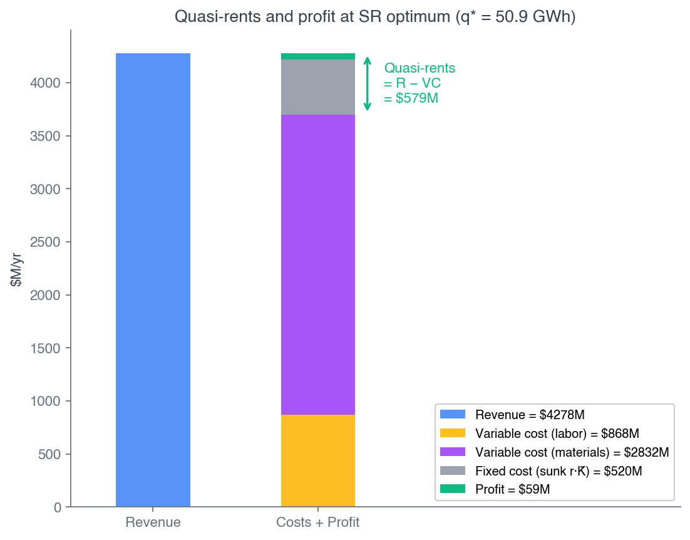
Three Price Regimes at a Glance
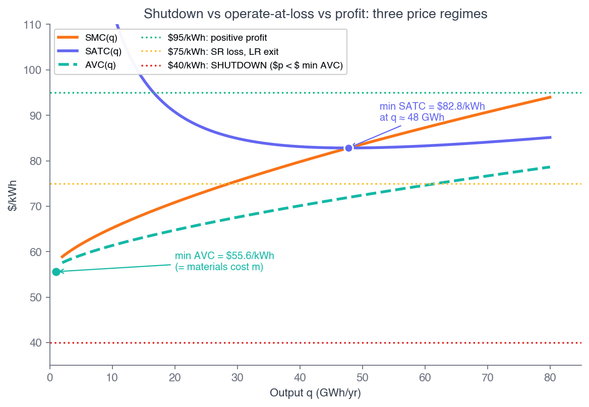
\(p = \$95\): \(p > \min ATC\) \(\Rightarrow\) positive profit.
\(p = \$75\): \(\min AVC < p < \min ATC\) \(\Rightarrow\) operate at a loss (SR), exit (LR). The zone the closing Walgreens stores are in.
\(p = \$40\): \(p < \min AVC\) \(\Rightarrow\) shut down. Every unit loses money before fixed cost.
The AVC rises monotonically from the materials floor — it isn't U-shaped, because the gigafactory cost is Cobb-Douglas (not the cubic textbook case). So min AVC \(= m = \$55.6\)/kWh sits at \(q \to 0\) (where \(MC = AVC\)); min SATC \(= \$82.8\)/kWh at \(q \approx 48\). The classic U-shaped AVC with \(MC\) through its bottom is the generic three-zones figure.
Walkthrough 9.2 — Price Collapse Below Materials Cost
Problem. Gigafactory baseline (\(\bar K=4, m=0.0556\)). The output price collapses to \(p_{\text{shock}} = 0.0334\) B\$/GWh (\(\$33.40\)/kWh, below materials cost). (1) SR optimal output? (2) Loss at shutdown? (3) Verify shutdown beats producing \(q = 10\).
Set up & solve
(1) Min AVC \(= m = 0.0556\). Since \(p_{\text{shock}} = 0.0334 < m\), the firm can't cover even marginal materials cost. The FOC has no positive solution: \(q_s^* = 0\) (shutdown).
(2) At \(q=0\): pay the sunk fixed cost, produce nothing. Loss \(= -r\bar K = -0.52\) B\$/yr \(= -\$520\)M/yr.
(3) Check \(q = 10\)
\(VC = 0.058 + 0.556 = 0.614\); revenue \(= 0.334\). Profit \(= 0.334 - 0.614 - 0.52 = -0.800\) B\$/yr.
\(0.058 = wL(10)\), the labor VC: invert \(q = 13.929\,L^{0.6}\) to get \(L(10) = (10/13.929)^{1/0.6}\approx 0.576\), so \(wL = 0.10\times 0.576\). The other piece \(0.556 = mq\) is materials VC.
\(-\$800\)M is worse than the \(-\$520\)M shutdown loss. Any positive \(q\) widens the loss. Shutdown is optimal.
Takeaway. When the price falls below materials cost, the next unit loses money on materials alone — before labor even enters. Shutdown caps the loss at the sunk fixed cost: the SR version of "stop digging."
Three Real 2024 Decisions — SR Shutdown vs LR Exit
Walgreens (Oct 2024): closes ~1,200 stores over three years, keeps ~7,500 open. The timing shows it — a store below AVC closes this quarter, not in 2027. So the 1,200 sit in \(AVC < P < ATC\): worth running while the lease is sunk, not worth renewing → LR exit. The 7,500 are the \(P > ATC\) keepers.
Spirit Airlines (Nov 2024): Chapter 11 at the firm level, but SR shutdown played out route by route: it cancelled flights where ticket revenue fell below per-flight AVC (14 airports dropped).
Northvolt (Nov 2024): textbook LR exit. Production cost \(\sim\$130\)/kWh against a \$84/kWh China-frontier price: \(p < ATC\) sustained even at full capacity. Operations weren't value-creating at any output.

§9.5
Supply = the Inverse of Marginal Cost
\(q^*(p) = MC^{-1}(p)\) · above the shutdown price
The Supply Curve Is the Rising \(MC\) Curve
The firm is a price taker — its output is a drop in the ocean, so \(p\) arrives from outside, set where market supply meets market demand. Building that market curve (the horizontal sum over all firms) is Ch 10's job; here we derive the one firm piece it sums.
The FOC \(MC(q^*) = p\) is one equation in \(p\) and \(q^*\). Solve it for every \(p\) and you trace a function:
\[ q^*(p) = \text{the } q \text{ solving } MC(q) = p \]
Heads Up
Supply is the rising part of the \(MC\) curve, with axes flipped (price up, quantity across). Below min AVC the firm produces zero — supply "lives on the price axis."
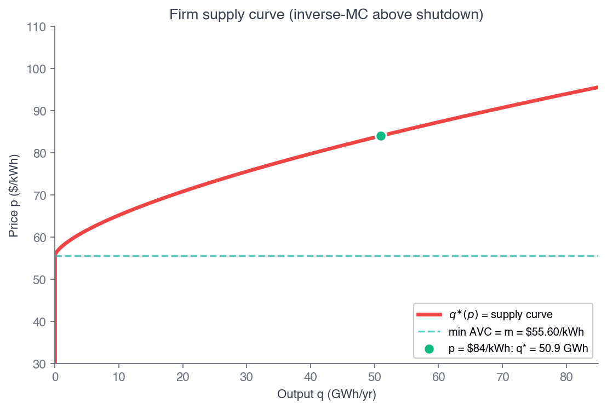
Closed-Form Cobb-Douglas Supply & Its Elasticity
Calculus Corner 9.3. Differentiating the FOC: \(dq^*/dp = 1/MC'(q^*) > 0\) — supply slopes up because \(MC\) slopes up. Supply is the \(MC\) curve read backwards, so take the gigafactory \(SMC(q) = 0.011967\,(q/13.929)^{2/3} + m\), set \(SMC(q) = p\), and invert:
\((q/13.929)^{2/3} = \dfrac{p - m}{0.011967}\) → raise both sides to the \(3/2\) →
\[ q_s^*(p) = 13.929\left(\frac{p - m}{0.011967}\right)^{1.5}\ \text{for } p > m,\qquad q_s^*(p)=0 \text{ otherwise} \]
Not new numbers: \(13.929 = A\bar K^{\alpha} = 8\cdot 4^{0.4}\) and \(0.011967 = w/(\beta A\bar K^{\alpha})\) — both inherited from the Ch 8 cost function.
Supply elasticity
\(\dfrac{d\ln q_s^*}{d\ln p} = 1.5 \cdot \dfrac{p}{p-m}\)
Leading \(1.5 = \beta/(1-\beta)\) is set by the production exponent; \(p/(p-m)\) amplifies through the thin value-added margin. At baseline: 4.44.
Three consequences
- Market supply (Ch 10) = horizontal sum of firms' \(MC\) curves.
- Anything shifting \(MC\) (wage, capital, technology) shifts supply.
- Supply elasticity is set by the technology: \(\beta/(1-\beta)\) under Cobb-Douglas with no materials.
Walkthrough 9.3 — Cobb-Douglas SR Firm Supply
Problem. Same Cobb–Douglas gigafactory setup. Nothing to derive — we built the supply curve on the previous slide. Just plug numbers into it:
\(q_s^*(p) = 13.929\left(\dfrac{p - m}{0.011967}\right)^{1.5}\), \(m = 0.0556\), and elasticity \(= 1.5 \cdot \dfrac{p}{p - m}\)
(1) Tabulate \(q_s^*\) at \(p = 0.060,\, 0.070,\, 0.080,\, 0.084,\, 0.090\). (2) Supply elasticity at \(p = 0.084\)?
(1) Tabulate \(q_s^*(p)\)
| \(p\) (B\$/GWh) | \(q_s^*\) (GWh) |
|---|---|
| 0.060 | 3.10 |
| 0.070 | 18.39 |
| 0.080 | 40.55 |
| 0.084 | 50.93 ✓ (= the gigafactory slide) |
| 0.090 | 67.89 |
(2) Elasticity at the baseline
Substitute \(p = 0.084\), \(m = 0.0556\):
\(1.5 \cdot \dfrac{0.084}{0.084 - 0.0556} \;=\; 1.5 \cdot \dfrac{0.084}{0.0284} \;=\; \mathbf{4.44}\)
A 1% price rise draws out a 4.4% output response — elastic, because the value-added margin \(p - m\) is thin.
Takeaway. The SR supply elasticity has a clean closed form \(1.5 \cdot p/(p-m)\): the \(1.5 = \beta/(1-\beta)\) is set by the production exponents, and \(p/(p-m)\) amplifies the response through the thin value-added margin.
Calibration carried over from Chs 7–8: \(A = 8\), \(\alpha = 0.4\), \(\beta = 0.6\), \(\bar K = 4\), \(w = 0.10\), \(r = 0.13\), \(m = 0.0556\) — hence \(13.929 = A\bar K^{\alpha}\) and \(0.011967 = w/(\beta A\bar K^{\alpha})\).
§9.7
Comparative Statics
How \(q^*\) responds to a wage shock and a price drop
Walkthrough 9.5 — A 20% Wage Shock
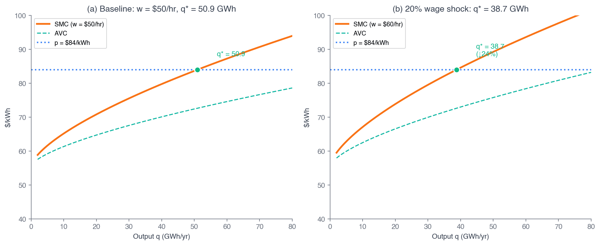
Wage rises 20% (\(w: 0.10 \to 0.12\), the UAW spillover from Ch 8). Output price stays at \(p = \$84\). How does the firm re-optimize?
−24%
Output \(q^*\): 50.9 → 38.7 GWh
−37%
Labor \(L^*\): 8.68 → 5.50 K
Profit flips: \(+\$58.6\)M \(\to -\$80\)M. The firm still operates (\(p > m\)), absorbing a SR loss. Labor falls faster than output because \(L_s \propto q^{1.667}\) under \(\beta = 0.6\).
The dashed AVC rises from the materials floor \(m\) — monotonic, not U-shaped (Cobb-Douglas, not the cubic case). The firm operates because \(p = \$84 > m = \$55.6\).
Walkthrough 9.6 — A 30% Output-Price Drop

Price falls 30% (\(p: 0.084 \to 0.0588\)). The value-added margin \(p - m = 0.0032\) is very thin.
−96%
Output \(q^*\): 50.9 → 1.9 GWh
SR: stay
\(p_1 > m\): quasi-rents \(+\$2\)M
LR: exit. \(p_1 = 0.0588 < \min ATC \approx 0.0828\). The firm operates today (loss \$518M, a hair under the \$520M shutdown loss) but cannot cover total cost — it exits.
The dashed AVC rises from the materials floor \(m\) — monotonic, not U-shaped (Cobb-Douglas, not the cubic case). \(p_1\) sits just above it, so the firm still operates in the SR.
Chapter Summary
Profit-max problem
Choose \(q \geq 0\) to maximize \(\pi = pq - c(w,r,q)\). FOC: \(p = MC(q^*)\). SOC: \(MC'(q^*) > 0\) (\(MC\) slopes up).
Supply = inverse-MC
\(q^*(p)\) solves \(MC(q)=p\) above min AVC, else zero. CD SR elasticity \(= \dfrac{\beta}{1-\beta}\cdot\dfrac{p}{p-m}\).
Shutdown vs exit
SR: operate iff \(p \geq \min AVC\) (FC sunk). LR: iff \(p \geq \min ATC\). Quasi-rents \(= pq - VC\) can be \(+\) while profit is \(-\).
Gigafactory example
At \(p=\$84\), \(m=\$55.6\): \(q^*=50.9\) GWh, \(L^*=8.68\)K, \(\pi^*=\$58.6\)M. \(p\) inherited by Ch 10.
Numbers carried into Ch 10: \(p = \$84\)/kWh, \(m = \$55.6\)/kWh (per-unit materials cost), plus all Ch 7–8 calibration. The gigafactory example ends with Ch 10.
Coming Up — Chapter 10: Perfect Competition
Today we built the firm's supply curve. Chapter 10 aggregates it into industry supply and closes the loop with free entry and exit.
Market supply \(= \displaystyle\sum_{\text{firms}} q_i^*(p) \quad\Rightarrow\quad \text{free entry drives } p \to \min LRAC,\ \ \pi = 0\)
- Horizontal summation: add up today's firm supply curves to get market supply.
- Free-entry equilibrium: with constant returns, entry pins the price down — it settles at \(LRMC + m = \$82.81\)/kWh and the number of firms \(N^*\) adjusts.
- Welfare theorem: the competitive equilibrium maximizes total surplus.
- Gigafactory example ends: the fixed \(p = \$84\) becomes endogenous.
Before next class: read manuscript §10.1–§10.3. Today's firm supply curve is the building block.
Questions?
Dr. Richeng Piao · ECON 2316 · Chapter 9